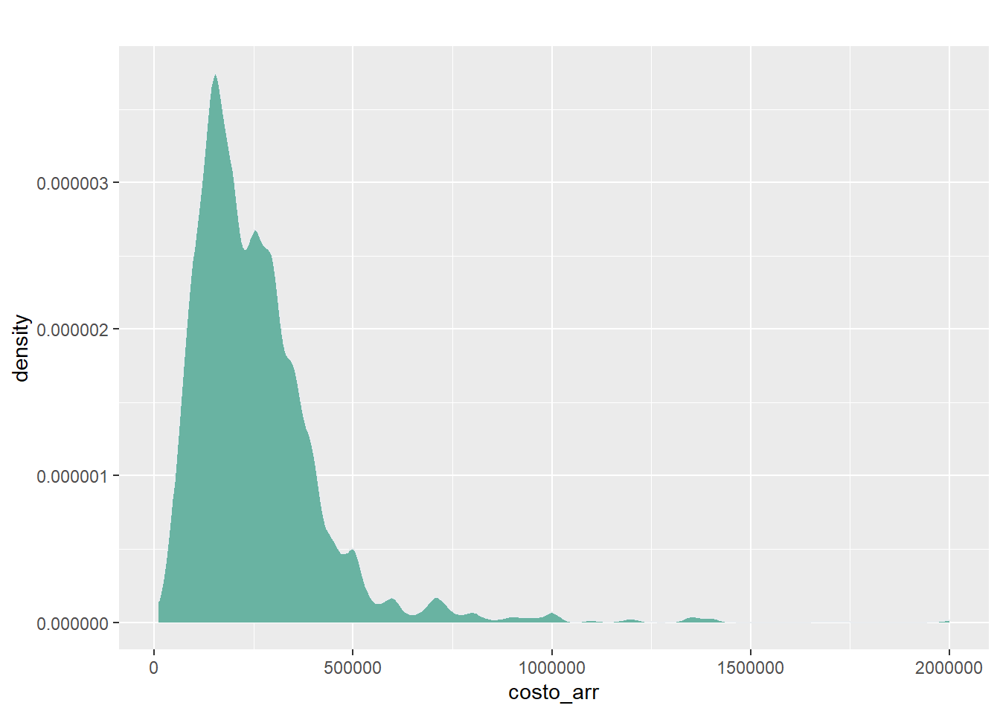

Migración y vivienda: estudio de los costos de arriendo para el 2017
Venegas, M; Dimter, J; Lafferte, A; Esturillo, D
25 de diciembre de 2019
Indice
Abstract
Al igual que otros países de la región, Chile vive la experiencia de nuevas transformaciones de su flujo migratorio. Esta experiencia se ve aparejada del fenómeno de arriendos abusivos, problema que permite observar uno de las formas de vulnerabilidad a la que se ve enfrentada la población migrante. Esta investigación indaga en los factores que determinan el precio de arriendo por parte de los habitantes de Chile durante el año 2017, focalizando en la población inmigrante. La pregunta principal a responder es; ¿Cuáles son los principales determinantes que influyen en las diferencias en los costos de arriendo de la población migrante entre las distintas comunas de Chile al año 2017? La hipótesis general de la presente investigación es que los principales factores que influyen en los costos de arriendo de la población migrante en las condiciones mencionadas son la nacionalidad no chilena, especialmente la población migrante intra regional, el porcentaje de arriendo sin contrato de la comuna y el índice acceso a servicios básicos en la comuna. Se testea lo anterior teniendo como fuente de información la Encuesta Casen 2017 (que contiene 216.439 casos originalmente de los cuales 4.301 fueron utilizados, correspondiente a población arrendataria migrante) mediante un análisis multinivel (HLM). La hipótesis general del estudio se rechaza, pues ninguna de los factores propuestos guarda una significancia estadística. Sin embargo, sexo e ingresos a nivel comunal presentan una significancia estadística interesante
Conceptos clave: migración, arriendo, análisis multinivel.
Introducción
En los últimos años, Chile ha sufrido una transformación en sus flujos migratorios que lo ha llevado a pasar de ser un éxodo de población a convertirse en un país receptor de migrantes, especialmente de migraciones intra-regionales. Sin embargo, esta transformación en sus flujos migratorios no ha ido de la mano con una renovación de enfoque en sus políticas de regulación para migrantes, más aún considerando que existe un consenso generalizado en la literatura sobre la desactualización e ineficacia de la política de regularización migratoria del país (Arís et al., 2018; Colunga, 2018; De las Heras, 2016; Figueroa et al., 2018; Libertad y Desarrollo, 2018; Silva et al., 2014). En consecuencia de esta discordancia, la población migrante se ha visto enfrentada a una seguidilla de barreras que terminan por situarlos en una condición de precariedad y de diversas desigualdades en distintos ámbitos de su vida (PNUD, 2017). La población migrante especialmente afectada por estas situaciones, está referida a lo que señala Tijoux & Mandiola (2015) como población migrante marginada, la cual se encuentra precisamente al margen de lo social al llegar a su destino como extranjero (Simmel, 1939 en Tijoux & Mandiola (2015). Con esto, la calificación de migrante se hace un poco más ambigua, generando una distinción entre quienes pueden mantenerse sin mayores dificultades debido a sus competencias y quienes buscan mejorar sus condiciones de vida viéndose normalmente expuestos a situaciones de vulnerabilidad y abusos. “Lejos de ser meramente una distinción jurídica, el carácter de inmigrante conlleva una serie de connotaciones negativas (Delgado, 1998 en Tijoux & Mandiola (2015) relacionadas con la desnaturalización del otro mediante la figura del extranjero, del que se encuentra fuera de los límites de la comunidad, y del pobre”. Por tanto, el inmigrante como paradigma del extranjero cuestiona el orden social en términos económicos y culturales (Simmel, 1939 en Tijoux & Mandiola (2015), exponiendo los antagonismos de la sociedad de destino, tales como los de raza, género, nación y clase. A partir de esto, en el presente trabajo se trabajará en específico sobre dicha población migrante marginada dado, los componente de clase, nación, género y raza, son los que más se imbrican en la mayoría de la población migrante en el país, esto es, la población migrante intra-regional. Uno de aquellos ámbitos de precarización de la población migrante es lo que refiere al acceso a vivienda y habitabilidad. Según Link et al. (2018) la situación de precariedad habitacional que vive la población migrante integra un conjunto de factores, tales como el allegamiento, el hacinamiento, y el que será tratado en profundidad acá; el arriendo abusivo.
El arriendo abusivo “se configura como una situación de aprovechamiento y explotación habitacional sobre la base de una relación asimétria , donde el migrante se encuentra en una posición de desventaja (…) que le impide establecer una relación de horizontalidad con el arrendador.” (p.20). Esta situación tiene como pilar de base el trato injusto que el arrendador ejerce al arrendatario en términos monetarios, haciendo uso de las asimetrías de poder para subir los costos de arriendo -en general- de una manera injustificada y reiterada. A modo de caracterizar la situación, la distinción entre “condiciones” y “características” que se esgrimen en los resultados de Link et al. (2018) otorgan una panorámica general de esta situación.
Figura 1: Características y condicionantes del arriendo abusivo. 
Fuente: Link et al. (2018)
Las condiciones ilustradas por la Figura 1 se encuentra en concordancia con las caracterizaciones realizadas a la población migrante respecto a su problemática situación de vivienda y habitabilidad propuestas por la literatura. Por un lado, Silva et al. (2014) diagnostican los trámites y la falta de información acerca de los procesos burocráticos como una barrera general importante para la integración del migrante. Por otro lado, el Servicio Jesuita a Migrantes (Roessler et al., 2020) señala que el/la migrante está dispuesto a sacrificar condiciones de habitabilidad en aras de aumentar su capacidad de ahorro y poder enviar remesas a su país, lo que implica una decisión utilitaria en vista de la urgencia de vivienda. En la misma línea, Ramos (2017) indica la conformación de un submercado de arriendo ilegal asociado a excesivos costos y prácticas de hostigamiento a la población migrante. Además, comprendiendo que la vivienda es un bien que en los últimos años se ha catalogado como un “vehículo de inversión” en tanto sus precios -en particular el arriendo- tienden a aumentar constantemente, la relación entre altos costos de vivienda y habitabilidad, y la concentración de población migrante intra-regional con necesidades de vivienda, tiende a posicionarse como positiva (López-Morales & Herrera Castillo, 2018; Pedemonte & Dittborn, 2016). De este modo, la condición migrante, y con particular énfasis en migrantes intra-regionales, está sujeta a costos de arriendos diferenciales y desiguales que afectan directamente su habitabilidad respecto a la población chilena.
El mercado habitacional informal se posiciona como una de las opciones más viables para la solución habitacional de la población migrante en virtud de las dificultades legales, laborales, de ingreso, ahorro e inversión que deben afrontar (Link et al., 2018; Roessler et al., 2020). Al respecto, de acuerdo con la encuesta Casen 2017, un 78% de la población migrante del país es arrendataria de la propiedad en la que vive, siendo la modalidad mayoritaria. Dentro de ello, el 35% lo hace sin contrato y pagando casi 20% más del valor de arriendo promedio para la población chilena (Colunga, 2018). Asimismo, es interesante señalar que existen diferencias en las condiciones para el arriendo entre regiones del país, destacando Santiago y Antofagasta. En Santiago existe una alta oferta de arriendo y costos variados, a diferencia de Antofagasta en donde existe una baja oferta y altos costos de arriendo, casi inaccesibles para población migrante (Link et al., 2018). Una de las principales razones de estas diferencias de valor de arriendo se debe a la facilidad de los arriendos sin contrato para la población migrante. En cuanto a esto, debido a las condiciones de irregularidad y barreras para la población migrante en lo que refiere a estadia, contrato laboral e ingresos, el arriendo sin contrato se vuelve una de las principales vías para el acceso a la vivienda (Colunga, 2018; Roessler et al., 2020). Sin embargo, esta modalidad de arriendo sujeta al migrante a una flexibilidad no fiscalizada de reajustes de costos y condiciones restrictivas que decantan en aprovechamientos abusivos en el valor de arriendo para la población migrante (CNN, 2018). De este modo, el arriendo sin contrato a la población migrante facilita los arriendos abusivos e influye en los costos diferenciales y desiguales. A raíz de ello, el porcentaje de arriendo sin contrato por comuna puede posicionarse como un factor general fundamental para describir y analizar de forma más precisa las diferencias de costos de arriendo de la población migrante.
Por su parte, otro de los factores asociados a la situación de calidad y valor habitacional, sea en términos genéricos como en su relación con la población migrante, refiere al acceso a servicios públicos y privados (Link et al., 2018; Winchester, 2008). Los costos de arriendo de la vivienda se ven fuertemente determinados por ciertos factores socio espaciales sustanciales, tales como; el valor del suelo, la calidad de la vivienda, el sector y barrio, y la cercanía de acceso a bienes y servicios. Sobre estos últimos, podemos distinguir entre transportes, centros educacionales, de salud, culturales, comunitarios, y hasta incluso, redes y contactos que potencien la movilidad social y la vida laboral (Andersson & Molina, 2003; Harvey, 2008). De este modo, el acceso a los diversos servicios que se generan y circulan en las localidades, distinguiendo entre bajas y altas calidades como también de escasas y abundantes cantidades, generan efectos directos sobre el hábitat urbano, el precio del suelo, el costo de vida, y los costos de arriendo (López-Morales et al., 2015).
Continuando, la localización territorial se vuelve determinante en las condiciones y valor de habitabilidad de la población dado que las diferencias socio-espaciales de los territorios influyen en los niveles de calidad de vida e integración social urbana (López-Morales, 2013; PNUD, 2017). Entre ellas se encuentran diferencias espaciales en términos de calidad-costo de vida, tipos de barrios, disposición urbana -concentración y distribución-, capitales circulantes, mercados inmobiliarios y otros. Ahora bien, una de las principales diferencias espaciales o factor que varía entre comunas refiere, precisamente, al acceso a bienes y servicios que se circunscriben en las diversas comunas del país y que, como hemos señalado, inciden sobre los costos de arriendo de manera diferencial o brechas de arriendo (rent gap) que varían según su localización (López-Morales et al., 2015; López-Morales & Herrera Castillo, 2018).
Respecto a esto último y añadiendo antecedentes de posibles relaciones de interacción entre niveles, tanto Link et al. (2018) como el Servicio Jesuita a Migrantes (Roessler et al., 2020) indican que la población migrante carece, por lo general, de buen acceso a servicios públicos y privados de calidad. Las demostraciones de la desigual distribución urbana respaldan lo anterior; alta segregación y emplazamiento a zonas periféricas y de bajos recursos, gentrificación y exclusión residencial por la baja capacidad extensiva de oportunidades de acceso a servicios (López-Morales et al., 2015). En este sentido, las diferencias de acceso a bienes y servicios a nivel comunal pueden afectar o influenciar la relación que existe entre la condición de población migrante sobre las diferencias de costos de arriendo en comparación con la población chilena (López-Morales et al., 2015; López-Morales & Herrera Castillo, 2018).
De igual forma, para el presente estudio se introduce con fines exploratorios determinar el posible efecto de interacción del porcentaje de arriendo sin contrato a nivel comunal en la relación entre la condición de población migrante sobre las diferencias de costos de arriendo en comparación con la población chilena. Esto, en virtud de que se estima que a mayor porcentaje de arriendo sin contrato, el panorama comunal de la relación entre nacionalidad y las diferencias de costos de arriendo tenderá a hacia lo positivo puesto que la modalidad de arriendo sin contrato es una de las principales vías utilizadas para la solución habitacional por parte de la población migrante y, como ha sido expuesto, implicaría mayores costos de arriendo (Arriagada & Vega, 2018; Colunga, 2018; Roessler et al., 2020).
Por último, otros posibles factores de nivel individual que son influyentes en los costos de arriendo de la población migrante dicen relación con el género, la existencia de contrato laboral y el año de llegada al país. Sobre el género, la conjugación de la condición de migrante junto al ser mujer contrae, por lo general, mayores desigualdades en diversos planos, entre ellos; el acceso a tratos justos, contratos legales, ingresos y segregación territorial (PNUD, 2017). En cuanto al segundo, se encuentra principalmente asociado a las condiciones de estabilidad económica que puede tener una persona al momento de acceder al arriendo de una vivienda; una cuestión que no se condice precisamente con la precariedad en la que llega y vive la población migrante marginada (Tijoux & Mandiola, 2015). Finalmente, el año de llegada al país dice relación con la variación del precio del mercado inmobiliario, situación que en Chile se ha dado al alza. El precio promedio de arriendo en zonas urbanas ha aumentado en un 31,2% entre el 2009 y 2015. Para la área metropolitana del Gran Santiago (AMGS) ha sido de un 18% esos mismos años. Por su parte, en la zona norte del país (Iquique y Antofagasta) el aumento en el costo de arriendo ha sido de un 99% (de 5,9 a 11,8 UF), muy por encima del promedio nacional. Se trata de zonas con alto capital circulante, dado los retornos de la industria minera. A su vez, se asocia con el comportamiento del mercado inmobiliario: la causa real del encarecimiento de los arriendos sería “la creciente concentración de la propiedad de vivienda adquirida para fines de renta, como sustituto del sistema de pensiones, y por fondos de inversión (incluyendo AFP), con cobros de arriendo que aseguran rentabilidad a esas inversiones” (López-Morales & Herrera Castillo, 2018). Con ello, el déficit habitacional en Chile se sitúa en más de 450.000 hogares. La oferta, contrariamente a lo que podría pensarse, existe en un altísimo nivel. Por esto, si una persona inmigrante logra acceder a un arriendo dentro de los años anteriores o primeros de esta situación de alza, se encontrará pagando un menor precio que quienes llegan teniendo estas condiciones de base.
Además, algunos posibles factores de nivel contextual que influyen en los costos de arriendo refieren a la calidad de la vivienda, el ingreso promedio por comuna y el porcentaje de población migrante por comuna. Respecto a la calidad de vivienda, en tanto medidor básico de desigualdades e índices de pobreza, juega un rol sustancial sobre el valor del arriendo y las condiciones de habitabilidad mínimas (PNUD, 2017). En segundo lugar, el ingreso promedio por comuna se introduce considerando las leyes de oferta y demanda, en donde un ingreso alto a nivel comunal podría guardar relación con costos de arriendo directamente proporcionales. Por último, la presencia de población migrante por comuna es un indicador básico de la estimación de la demanda de vivienda comunal. Inclusive, actualmente la alta cantidad de población migrante genera una demanda habitacional que presiona sobre los precios de vivienda en diferentes comunas del país, por lo que se considera un predictor de control influyente (López-Morales & Herrera Castillo, 2018).
Esbozado lo anterior, y considerando la naturaleza multinivel del presente estudio, se procede a sintetizar el entramado de relaciones entre las variables propuestas en distintos niveles de relación. En primer lugar, se plantean los costos de arriendo como el objeto de estudio. En segundo lugar, se sostiene que la nacionalidad tiene un rol sustancial al considerarla como un posible atributo que influye en las diferencias de los costos de arriendo, probablemente originadas por actitudes discriminatorias hacia la población migrante. En tercer lugar, se han modelado dos posibles determinantes sobre los costos de arriendo que han sido tratados en la literatura aunque de forma descriptiva, estos son el porcentaje de arriendo sin contrato y el acceso a bienes y servicios . Ambas variables serán a nivel comunal en virtud de que la desagregación de estos determinantes pueden presentar ciertas variaciones a este nivel, otorgando mayor especificidad en términos de hallazgos e insumos para la discusión comunal en política pública. Por último, la relación entre el fenómeno a estudiar y los determinantes de control a nivel individual se da a partir de la posible influencia de variables sociodemográficas, las cuales son modeladas como sexo, existencia de contrato laboral y el año de llegada al país. Asimismo, para los determinantes de nivel contextual se incluyen las variables de calidad de vivienda, ingreso promedio por comuna y el porcentaje de población migrante por comuna. Estas variables se usan con el fin de complejizar los datos descriptivos existentes en la literatura.
Este estudio propone dos tipos relevancia: una político-social y una investigativa. En primer lugar, proponemos aportar evidencia a la reflexión sociológica sobre las implicancias de los nuevos flujos migratorios en cuanto a su integración social urbana y calidad habitacional sobre la dimensión particular de costos de arriendo. En segundo lugar, mediante el uso de técnicas y análisis multinivel se pretende elaborar un aporte para una caracterización más acabada de la situación habitacional de la población migrante con el fin de ser dispuesto a su deliberación y política pública.
En suma, el presente estudio enmarca sus lineamientos en dos tipos de alcance. El primero refiere esbozar un panorama del fenómeno de los costos de arriendo en el país, explorando las determinantes que le influyen orientándose por la siguiente pregunta: ¿Cuáles son los principales determinantes que influyen en las diferencias en los costos de arriendo de la población migrante entre las distintas comunas de Chile al año 2017? . El segundo refiere a una línea de acción de alcance relacional, en dónde se estudiarán las influencias de distintas determinantes en los costos de arriendo y a distintos niveles.
Objetivos e hipótesis
I. Objetivos de investigación.
Objetivo general:
Explorar los principales determinantes que influyen en las diferencias en los costos de arriendo de la población migrante entre las distintas comunas de Chile al año 2017.
Objetivos específicos:
- Determinar la influencia de la nacionalidad sobre los costos de arriendo en la población migrante en Chile al año 2017.
- Determinar la influencia del porcentaje de arriendo sin contrato sobre los costos de arriendo en la población migrante por comuna en Chile al año 2017.
- Determinar la influencia del acceso a servicios sobre los costos de arriendo de la población migrante por comuna en Chile al año 2017.
- Explorar cambios en el efecto de la nacionalidad sobre las diferencias de costos de arriendo de la población migrante por comuna según el porcentaje de arriendo sin contrato en la comuna en Chile al año 2017.
- Explorar cambios en el efecto de la nacionalidad sobre las diferencias de costos de arriendo de la población migrante por comuna según el acceso a servicios en la comuna en Chile al año
II. Hipótesis.
Hipótesis general:
Uno de los principales determinantes que influyen en los costos de arriendo de la población migrante entre las distintas comunas de Chile al año 2017 será, precisamente, su nacionalidad no chilena, y en particular, la de aquella población migrante intra regional. De esta forma, la población migrante intra regional tenderá a experimentar mayores costos de arriendo por comuna.
Otro de los principales determinantes es el porcentaje de arriendo sin contrato de la comuna, entendiéndolo como un indicador de lo que es un sub mercado inmobiliario ilegal que conlleva situaciones de precariedad habitacional; arriendos excesivos, para la población migrante. Finalmente, el acceso a servicios por comuna también se posiciona como uno de los principales determinantes que influyen en los costos de arriendo de la población migrante en Chile al año 2017 dado que se considera un indicador clave para discriminar los precios de arriendo.
Hipótesis específicas
- La población migrante intra regional, tendrá mayores costos de arriendo en comparación a la población migrante extraregional.
- A mayor porcentaje de arriendo sin contrato habrá mayores costos de arriendo en la comuna.
- A mayor puntaje de acceso a servicios habrá mayores costos de arriendo en la comuna.
- Existirán cambios en la relación entre nacionalidad y diferencias de costos de arriendo según el porcentaje de arriendos sin contrato por comuna.
- Existirán cambios en la relación entre nacionalidad y diferencias de costos de arriendo según el puntaje de acceso a servicios por comuna.
Datos y metodología
Como se ha mencionado anteriormente, el alcance investigativo del presente estudio se configura como una combinación de índole exploratoria y relacional, considerando que la orientación del análisis busca examinar distintos predictores para las diferencias de costos de arriendo de población migrante y que, a su vez, pretende relacionar algunos predictores sustentados por la teoría a diferentes niveles de interacción.
Para llevar adelante el análisis del objetivo propuesto, este estudio se basa en la información proporcionada por la base de datos CASEN 2017. Sobre un total de 216.439 casos se consideran para el análisis una muestra de nivel uno de 39.275 casos, correspondiente a la población arrendataria para el año 2017, y de esa población se considera solamente a la población migrante, por lo que la unidad de información del presente estudio es población arrendataria migrante. A nivel comunal, la muestra utilizada corresponde a la cantidad de 322 comunas registradas en la encuesta. La unidad de análisis corresponde al nivel de respuesta individual (encuestados), sin embargo, en determinadas variables la unidad de análisis es a nivel de hogar.
Respecto a las variables consideradas para el análisis de las diferencias en los costos de arriendo de la población migrante en Santiago al año 2017 estas se diseñaron como: la nacionalidad como variable de L1; el porcentaje de arriendo sin contrato en la comuna y el promedio de acceso a servicios en la comuna como variables de L2; y los costos de arriendo como variable dependiente. La mayoría de las variables fueron codificadas para el análisis con excepción de la variable dependiente.
Tomando como referencia las variables consideradas, se presentan a continuación los detalles de cada una:
Gráfico 1: Descriptiva de variable costos de arriendo 
Fuente: Elaboración propia a partir de CASEN 2017
Tabla 1: Descriptiva variable origen
| Freq | % | % Cum. | |
|---|---|---|---|
| Extra-regional | 186 | 4.32 | 4.32 |
| Centroamerica y el Caribe | 668 | 15.53 | 19.86 |
| Region Sudamericana | 3447 | 80.14 | 100.00 |
| Total | 4301 | 100.00 | 100.00 |
Fuente: Elaboración propia a partir de CASEN 2017
La variable independiente de L1 correspondiente a nacionalidad (r1a_esp) ha sido recodificada de la siguiente manera: “Región Sudamericana”, “Centro America y el Caribe” y “Extra regional” . La justificación de esta codificación recae en que 1) permite entender diferencias entre migrantes extra e intra regionales y 2) permite conocer con mayor detalle características de migrantes intra-regionales.
Tabla 2: Descriptiva variable tipo de uso de la vivienda
| Freq | % | % Cum. | |
|---|---|---|---|
| Arriendo con contrato | 2605 | 60.57 | 60.57 |
| Arriendo sin contrato | 1696 | 39.43 | 100.00 |
| Total | 4301 | 100.00 | 100.00 |
Fuente: Elaboración propia a partir de CASEN 2017
La variable independiente de L2 correspondiente a tipo de uso de la vivienda (v13) ha sido recodificada a: 5.“Arriendo con contrato y 6.”Arriendo sin contrato”, las variables restantes son excluidas debido al objeto de investigación. Esta variable se construye nivel comunal, dejando como variable independiente de nivel 2 el porcentaje de arriendo sin contrato en la comuna.
Tabla 3: Descriptiva variable acceso a servicios básicos
| Freq | % Valid | % Valid Cum. | % Total | % Total Cum. | |
|---|---|---|---|---|---|
| 0 | 19 | 0.44 | 0.44 | 0.44 | 0.44 |
| 0.111111111111111 | 19 | 0.44 | 0.88 | 0.44 | 0.88 |
| 0.222222222222222 | 30 | 0.70 | 1.58 | 0.70 | 1.58 |
| 0.333333333333333 | 19 | 0.44 | 2.02 | 0.44 | 2.02 |
| 0.428571428571429 | 3 | 0.07 | 2.09 | 0.07 | 2.09 |
| 0.444444444444444 | 48 | 1.12 | 3.21 | 1.12 | 3.21 |
| 0.5 | 4 | 0.09 | 3.30 | 0.09 | 3.30 |
| 0.555555555555556 | 85 | 1.98 | 5.28 | 1.98 | 5.28 |
| 0.571428571428571 | 5 | 0.12 | 5.40 | 0.12 | 5.39 |
| 0.625 | 4 | 0.09 | 5.49 | 0.09 | 5.49 |
| 0.666666666666667 | 123 | 2.86 | 8.35 | 2.86 | 8.35 |
| 0.714285714285714 | 1 | 0.02 | 8.38 | 0.02 | 8.37 |
| 0.75 | 27 | 0.63 | 9.01 | 0.63 | 9.00 |
| 0.777777777777778 | 182 | 4.24 | 13.24 | 4.23 | 13.23 |
| 0.8 | 3 | 0.07 | 13.31 | 0.07 | 13.30 |
| 0.833333333333333 | 1 | 0.02 | 13.33 | 0.02 | 13.32 |
| 0.857142857142857 | 7 | 0.16 | 13.50 | 0.16 | 13.49 |
| 0.875 | 35 | 0.81 | 14.31 | 0.81 | 14.30 |
| 0.888888888888889 | 503 | 11.71 | 26.02 | 11.69 | 25.99 |
| 1 | 3179 | 73.98 | 100.00 | 73.91 | 99.91 |
| <NA> | 4 | 0.09 | 100.00 | ||
| Total | 4301 | 100.00 | 100.00 | 100.00 | 100.00 |
Fuente: Elaboración propia a partir de CASEN 2017
La variable independiente de L2 correspondiente a acceso a servicios (v37) ha sido recodificada mediante un índice de la siguiente manera; con una puntuación que varía de su mínimo 0 a 1 máximo, considerando 0. Bajo acceso a servicios y 1. Alto acceso a servicios. Esto considera únicamente las preguntas de las que se tiene conocimiento, excluyendo aquellas que se declaran No sabe . Por lo tanto, es un índice construido bajo un denominador flexible. Las categorías de respuesta originales que fueron agrupadas mediante el índice corresponden a una pregunta nominal dicotómica (1. Sí, 2. No y 9. No sabe) y son las siguientes: a) ¿Menos de 8 cuadras o 1 Km de un servicio de transporte público (paradero, estación)?, b) ¿A menos de 20 cuadras o 2,5 Km de un centro educacional (colegio o jardín infantil)?, c) ¿A menos de 20 cuadras o 2,5 Km de un centro de salud (atención primaria o nivel superior)?, d) ¿A menos de 20 cuadras o 2,5 Km de un supermercado, almacén o feria?, e) ¿A menos de 20 cuadras o 2,5 Km de un cajero automático o caja vecina?, f) ¿A menos de 20 cuadras o 2,5 Km de un equipamiento deportivo (centros deportivos, canchas, skatepark)?, g) ¿A menos de 20 cuadras o 2,5 Km de áreas verdes (plazas o parques)?, h) ¿A menos de 20 cuadras o 2,5 Km de equipamiento comunitario (centros vecinales, sedes sociales, biblioteca vecinal o centro cultural comunitario)?, i) ¿A menos de 20 cuadras o 2,5 Km de una farmacia?. La razón de su agrupación mediante un índice responde a generar un marco general de puntuaciones de una variable contínua junto a facilitar su operacionalización e interpretación numérica.
En lo que refiere a las variables de control para L1, estas consisten en: sexo (sexo) , existencia de contrato laboral (o17) , y año de llegada a Chile (r1c_año) . Ninguna de las variables de control de L1 han sido modificadas. Respecto a las variables de control para L2: variables que refieren a calidad básica de vivienda, un promedio de ingresos por comuna y un porcentaje de población migrante por comuna. La calidad básica de vivienda se compone de las variables muros (v2) , Mt2 de la vivienda (v12), cantidad dormitorios (v27a) y cantidad de baños (v27b). Se utiliza la variable ingreso (y1) realizando un proceso de agregado a nivel comunal, construyendo un promedio de ingresos por comuna. Por último, el porcentaje de población migrante por comuna se construye mediante estimaciones de nacionalidad (r1a_esp) distribuyendo los datos por las respectivas comunas.
Análisis de resultados
Análisis bivariado
Matriz de correlaciones 1: Variables a nivel individual

La siguiente matriz correlaciona los costos de arriendo con características a nivel individual de la muestra. Las correlaciones de mayor fuerza son: ingresos y costos de arriendo (0.46); tipo de uso de la vivienda (con o sin contrato) y costos de arriendo (-0.32); y por último, metros cuadrados de la vivienda y costos de arriendo (0.31). La primera indica una correlación moderada positiva, dando cuenta que a mayores ingresos percibidos implicaría a su vez mayores posibilidades de acceso a mejores y más altos arriendo de viviendas . La segunda señala que el tipo de uso (con o sin contrato) responde a una correlación negativa moderada en referencia a los costos de arriendo. La tercera también indica una relación moderada positiva entre metros cuadrados y costos de arriendo, es decir; a mayor metros cuadrados mayor costo de arriendo.
Matriz de correlaciones 2: Variables a nivel comunal 
Esta última matriz nos presenta las variables de segundo nivel que han sido seleccionadas para el modelo, correspondientes a características comunales. Se correlaciona el porcentaje de población migrante de la comuna, el promedio del índice de acceso a servicios de la comuna, el promedio de ingreso individual de la comuna y el porcentaje de arriendo sin contrato de la comuna. Los tamaño de efecto de las correlaciones de cada variable de nivel 2 con los costos de arriendo en orden creciente es la siguiente: los costos de arriendo con el porcentaje de migrantes en la comuna presenta una relación nula. Los costos de arriendo con el acceso a servicios básicos a nivel de comuna presentan una relación positiva baja (0.15), es decir, a mayor acceso a servicios básicos en la comuna mayor costos de arriendo. Los costos de arriendo con el porcentaje de arriendo sin contrato en la comuna presenta una relación negativa baja (-0.28), lo que implica que a mayor porcentaje de arriendo sin contrato en la comuna menos costos de arriendo. Por último, y aquella relación con mayor efecto (casi alto) es la de promedio de ingresos a nivel comunal con costos de arriendo, en donde a mayor promedio de ingreso en la comuna, mayores costos de arriendo.
Correlación intra-clase
El valor de la correlación intra-clase respecto a las diferencias de los costos de arriendo según las comunas de Chile al 2017 es de 0.373484 . De esta manera, un 37.3% de la varianza de los costos de arriendo se asocian a la pertenencia de unidades de nivel comunal, lo cual da pie para un análisis multinivel.
Modelos multinivel
Tabla 4: Regresiones multinivel

Para la pregunta de investigación que orienta el presente estudio podemos dar cuenta que los principales determinantes que demuestran tener una influencia en los costos de arriendo son: sexo, arriendo sin contrato (a nivel 1), monto de ingresos, muros, metros cuadrados de la vivienda y el ingreso promedio a nivel comunal.
Estos hallazgos refutan la hipótesis propuesta para la pregunta general, en tanto ninguna de las variables de hipótesis esbozadas poseen una significancia estadística en el modelo1.
Profundizando en las hipótesis específicas, podemos señalar lo siguiente:
“La población migrante intraregional, tendrá mayores costos de arriendo en comparación a la población migrante extraregional”
Si bien, el modelo no presenta una significancia estadística para estas variables, sí es interesante señalar su comportamiento. Cómo indica la tabla, la población migrante provenientes de países de Centroamérica y el Caribe paga, en promedio, 7.831 pesos más que la población migrante extra regional. En esta misma línea, la población migrante sudamericana paga, en promedio, 154.199 pesos más que la población migrante extra regional. Estos datos nos señalan que, efectivamente, la población migrante intrarregional se ve enfrentada a costos de arriendo más altos en comparación a la población migrante extra regional. No obstante, estos costos son abismalmente distintos entre población centroamericana y caribeña y población sudamericana. La hipótesis se acepta.
“A mayor porcentaje de arriendo sin contrato habrá mayores costos de arriendo en la comuna”
El modelo elaborado permite aceptar la hipótesis propuesta , pues independiente de la inexistencia de relevancia estadística, los datos muestran que por cada punto porcentual que aumenta el porcentaje de arriendo sin contrato a nivel comunal, los costos de arriendo suben en 255.558 pesos.
“A mayor puntaje de acceso a servicios habrá mayores costos de arriendo en la comuna”
Al igual que el predictor anterior, el modelo permite aceptar la hipótesis propuesta, ya que los datos indican que por cada punto en el índice de acceso a servicios básicos a nivel comunal, los costos de arriendo suben en 122.130 pesos.
“Existirán cambios en la relación entre nacionalidad y diferencias de costos de arriendo según el porcentaje de arriendos sin contrato por comuna”
Según el modelo, cuando el porcentaje de arriendo sin contrato a nivel comunal es 0, se espera que la población migrante centroamericana y sudamericana tenga costos de arriendo, en promedio, más altos que la población extra regional. Sin embargo, cuando se introduce el porcentaje de arriendo a nivel comunal como una variable de interacción, la relación se torna negativa. En detalle, la población migrante centroamericana y sudamericana tendrán, respectivamente, costos de arriendo 200.505 y 250.164 pesos más bajos que la población migrante extra regional cuando el porcentaje de arriendo sin contrato a nivel comunal es variable. La hipótesis se acepta, puesto que existen cambios en la relación por la variable de interacción.
“Existirán cambios en la relación entre nacionalidad y diferencias de costos de arriendo según el puntaje de acceso a servicios por comuna”
Al igual que el predictor anterior, se espera que cuando el índice de acceso a servicios básicos a nivel comunal es 0 la población migrante centroamericana y sudamericana tenga costos de arriendo, en promedio, más altos que la población extra regional. Sin embargo, esta relación cambia cuando se introduce el índice de acceso a servicios básicos a nivel comunal como variable de interacción; la relación se mantiene positiva para la población centroamericana y se torna negativa para la población sudamericana. En detalle, la población migrante centroamericana tendrá, en promedio, costos de arriendo 36.649 pesos más altos que la población migrante extra regional, y la población sudamericana tendrá, en promedio, costos de arriendo 100.733 más bajos que la población migrante extra regional, cuando el índice de acceso a servicios básicos a nivel comunal es variable. La hipótesis se acepta, puesto que existen cambios en la relación por la variable de interacción.
Costos de arriendo de la población migrante, discusión y conclusiones
A modo de reflexiones con respecto a los datos presentados en el informe, es que se hace interesante señalar lo siguiente.
En primer lugar, el hecho de que la nacionalidad no figure como un predictor estadísticamente significativo en los costos de arriendo es un hallazgo bastante discutible en términos académicos y políticos, pues iría en contra de lo que se ha señalado en la literatura con conceptos como “arriendo abusivo” o “población migrante marginada”. Sin embargo, en vez de ser interpretado como la recta final, puede ser el punto de inicio de investigaciones detalladas que traten sobre estas variables. Más aún, considerando que la relación aquí planteada puede estar entrecruzada con factores como la discriminación, la precariedad habitacional etc. Se propone para futuras investigaciones (o futuras versiones de esta misma) hacer un tratamiento más fino -metodológicamente hablando- de la variable de nacionalidad, como por ejemplo, analizandola por países o haciendo un análisis directamente con lo que Tijoux & Mandiola (2015) ha denominado como población migrante marginada.
Independiente de lo anterior, es interesante que el comportamiento de los coeficientes muestre un incremento de más de 150.000 pesos en costos de arriendo para población migrante sudamericana, en comparación a población migrante extraregional. Este tipo de datos nos permite seguir discutiendo sobre las etiquetas diferenciales que se les da al afuerino dependiendo de su lugar de origen; es volver a retomar la discusión de antaño de Simmel sobre el “extrajero” y el “migrante”.
En segundo lugar, pareciese ser que el arriendo sin contrato a nivel comunal no figura como un determinante de los costos de arriendo en los modelos presentados. Esto, desde una mirada somera, podría llamar al optimismo si es que lo tomamos como un indicio de que los mercados de arriendo informal no están tan sólidamente establecidos en las distintas comunas de Chile, y por ende no alcanzan a tener los porcentajes necesarios de arriendo sin contrato para que a nivel estadístico muestre alguna relevancia. Sin embargo, el coeficiente que arroja el modelo no deja de ser desconcertante. En la misma línea, el hecho de que el modelo muestre que el porcentaje de arriendo sin contrato de una comuna interactúa con el efecto que la nacionalidad tiene en los costos de arriendo es bastante relevante en términos metodológicos, pues permite dar una idea de la relevancia que tienen las condiciones contextuales (en este caso de la comuna) en la relación entre dos variables. En este caso, permite entender cómo la relación entre la nacionalidad y los costos de arriendo varía de acuerdo al porcentaje de arriendos sin contrato que exista en las diferentes comunas, lo que en términos más sustantivos nos podría ayudar a esbozar un panorama de cómo la población migrante se enfrenta a distintos costos de arriendo dependiendo de qué tan consolidado esté el mercado de arriendo informal en la comuna. Este podría ser un punto de partida para explorar lo que sucede en las diferencias de precios en comunas de Santiago y Antofagasta.
En tercer lugar, si bien el índice de servicios básicos a nivel comunal tampoco figura como una determinante con significancia estadística, su comportamiento indica una relación más menos lógica correspondiente al mercado inmobiliario: una propiedad sube su precio de acuerdo a los servicios cercanos que tenga. Al igual que con la variable anterior, lo interesante es dar cuenta de cómo este factor hace variar la relación entre nacionalidad y costos de arriendo.
En cuarto lugar, dentro de los factores en los que se halló una significancia estadística -omitiendo los que refieren a características de la vivienda- llama la atención la variable sexo, en donde mujeres migrantes pagan más en costos de arriendo que hombres migrantes. Esto se podría explicar a partir de las caracterizaciones que entrega Roessler et al. (2020), indicándose que cuando la migración es por parte de mujeres suele ser acompañada de toda la familia, a diferencia de los hombres que suelen inmigrar para mandar remesas a sus familias. Una posible explicación para estos mayores costos es que el hecho de arrendar para mujeres con familia sea un riesgo mayor a percepción de arrendadores y suban los precios. No obstante, tampoco se descartan estas alzas de arriendo como discriminaciones de género y/o meros aprovechamientos.
Por último, el único aspecto a nivel comunal que resultó ser estadísticamente significativo fue el de los ingresos a nivel comunal. A saber, dentro de comunas con mayores ingresos, los costos de arriendo tenderán a ser mayores, lo cual va en concordancia con las leyes del mercado. Por dar ejemplos; dentro de las comunas con menores ingresos y costos de arriendo más bajos se encuentran, dentro de Santiago, Estación Central ($290.000), Independencia y Santiago ($300.000). Las comunas con mayores ingresos y mayores costos de arriendo sería el sector oriente de Santiago, con Lo Barnechea ($1.200.000), Vitacura ($1.060.000) y Las Condes ($760.000) (Ministerio de Vivienda y Urbanismo & Pablo Trivelli y Cía. Ltda, 2016).
En aras de la contingencia de temas de migración, se deja sobre la mesa los datos y la discusión acá planteadas para ser puntos de inicio para investigaciones futura. Se propone como lineamientos futuros trabajar con países en específico como Haití, en vista la precariedad con la que residen en Chile (Roessler et al., 2020) y asimismo se propone la difusión del uso de herramientas multinivel para la realización futura de estudios más integrales.
Referencias
Andersson, R., & Molina, I. (2003). Racialization and migration in urban segregation processes. Key issues for critical geographers (pp. 261–282). https://doi.org/10.4324/9781315234939-15
Arís, M., Meza, M. J., & Valenzuela, P. (2018). Arís, Manuel; Meza, María José; Valenzuela, Pablo. Estudio De análisis comparativo regional de las regulaciones migratorias en América Latina. Documento de referencia N39. Diciembre 2018 (60 páginas).
Arriagada, C., & Vega, M. (2018). EyN: El "negocio" del subarriendo: Familias migrantes pagan hasta cinco veces más por el valor de una casa en el centro de Santiago. http://www.economiaynegocios.cl/noticias/noticias.asp?id=464503.
CNN, C. (2018). El problema habitacional del migrante. In CNN Chile. https://www.cnnchile.com/pais/el-problema-habitacional-del-migrante_20180429/.
Colunga, F. (2018). Situación habitacional de extranjeros en Chile: los principales hallazgos de la investigación del Servicio Jesuita a Migrantes y Colunga. In Fundación Colunga.
De las Heras, M. J. (2016). Los migrantes como sujetos del sistema de protección social en Chile Centro UC Políticas Públicas. In Centro UC Políticas Públicas. https://politicaspublicas.uc.cl/publicacion/serie-temas-de-la-agenda/los-migrantes-como-sujetos-del-sistema-de-proteccion-social-en-chile/.
Figueroa, R., Parada, C., & Mardones, F. (2018). Migraciones en Chile: Tres perspectivas de análisis. In Santiago: Biblioteca del Congreso Nacional de Chile.
Harvey, D. (2008). El derecho a la ciudad. New Left Review, 53, 23–39.
Libertad y Desarrollo. (2018). Políticas públicas para una migración sustentable.
Link, F., Troncoso, C., Troncoso, M., & Techo, F. (2018). Situación habitacional de las personas migrantes en algunas comunas urbanas de la Región Metropolitana y Antofagasta.
López-Morales, E. (2013). Gentrificación en Chile: Aportes conceptuales y evidencias para una discusión necesaria. Revista de Geografía Norte Grande, 56, 31–52. https://doi.org/10.4067/S0718-34022013000300003
López-Morales, E., Arriagada-Luco, C., Gasic-Klett, I., & Meza-Corvalán, D. (2015). Efectos de la renovación urbana sobre la calidad de vida y perspectivas de relocalización residencial de habitantes centrales y pericentrales del Área Metropolitana del Gran Santiago | López-Morales | Revista EURE - Revista de Estudios Urbano Regionales. http://www.eure.cl/index.php/eure/article/view/1490.
López-Morales, E., & Herrera Castillo, N. (2018). Arriendos por las nubes: efecto de la creciente concentración de la propiedad CIPER Chile.
Ministerio de Vivienda y Urbanismo, & Pablo Trivelli y Cía. Ltda (Eds.). (2016). Estimación y análisis de precios de arriendo residencial para las capitales regionales: Informe final. Minvu, Trivelli y Cía.
Pedemonte, N. R., & Dittborn, C. S. (2016). LA MIGRACIÓN EN CHILE: BREVE REPORTE Y CARACTERIZACIÓN. 44.
PNUD. (2017). Desiguales. Orígenes, cambios y desafíos de la brecha social en Chile.Santiago de Chile, Programa de las Naciones Unidas para el Desarrollo. (First).
Ramos, A. (2017). El acceso a la vivienda y migración extranjera en Chile.
Roessler, P., Ramaciotti, J., Bravo, S., Faiguenbaum, M., Ojeda Pereira, I., Leyton, V., Lafferte, A., Muñoz, B., Venegas, M., Campos, F., Pedemonte, N., Lagos, T., & Vargas, F. (2020). Informe 3: Acceso a la vivienda y condiciones de habitabilidad de la población migrante en chile. Servicio jesuita a migrantes - TECHO-Chile - facultad de sociología u. De chile - centro de ética y reflexión social fernando vives SJ, u. Alberto hurtado.
Silva, C., Palacios, R., Covarrubias, M., Saffirio, Traipe, M., & Valenzuela, C. (2014). Inmigrantes profesionales: Propuestas de mejora para que ejerzan en Chile. Propuestas para Chile 2014 .
Tijoux, M. E., & Mandiola, S. (2015). Aproximaciones teóricas para el estudio de procesos de racialización y sexualización en los fenómenos migratorios de Chile. Polis, 14(42), 247–275. https://doi.org/10.4067/S0718-65682015000300012
Winchester, L. (2008). La dimensión económica de la pobreza y precariedad urbana en las ciudades latinoamericanas: Implicaciones para las políticas del habitat. EURE (Santiago), 34(103), 27–47. https://doi.org/10.4067/S0250-71612008000300002
De aquí en adelante, cada vez que se refiere a “el modelo”, se estará hablando del último modelo calculado, es decir; el “Modelo de Interacción”↩︎